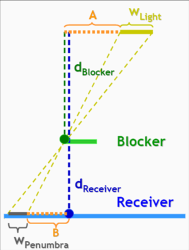
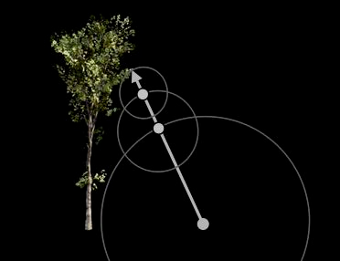
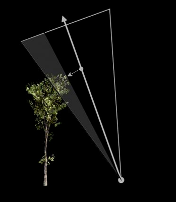
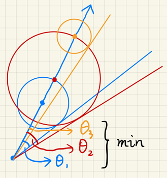

1 Real-time Shadows¶
回忆一下之前 shadow mapping法
Shadow mapping 存在一系列问题，其中之一是自遮挡问题
-
可以引入 bias 以解决这个问题，这个 bias 可以与夹角相关，垂直的时候比较小，平行的时候比较大。但是引入 bias 也会造成其他的一个问题就是阴影偏移 (detached shadow)。
-
还有一种方法是 Second-depth shadow mapping，记录shadow mapping 的时候，不仅记录最短的深度，也记录第二短的深度，然后用二者的中间值作为比较的深度。[但是这个方法在工业界并没有人使用，因为这个方法要求所有的物体都要是 watertight 的，并且需要记录更多的东西，尽管两者的复杂度是一样的]
{kind=link}
实时渲染不相信复杂度
还有一个问题就是走样，这个方法可以利用层级的 shadow mapping 来优化这个问题。
Maths behind shadow mapping¶
回忆一下微积分中的几个常见的不等式
Schwarz 不等式：
Minkowski 不等式：
这些虽然看上去是不等式，但是在实时渲染领域，我们常常将这些不等式看作约等式。
一个常用的式子如下
直观地理解就是将 \(f(x)\) 在这个区域内的值都取平均值。那么什么时候取平均值会比较准呢？
- 积分域比较小
- \(f(x)\) 在积分域上变化不大
回忆之前一下之前学习的公式
这个公式利用上述约等式进行拆分即可得到
为什么上述公式是准的？
- Small Support —— 点光源/面光源，因为光只从一个方向来
- Smooth Integrand —— diffuse brdf / constant radiance area lighting
什么时候是不准的呢？其实就是在面光源 + glossy 的 brdf 材质下是不准的
Percentage Closer Soft Shadows¶
软阴影区别于硬阴影就在于在没有阴影和有阴影之间存在一个半阴影的部分。
在介绍 PCSS 之前，首先介绍一下 Percentage Closer Filtering (PCF)
这个 PCF 最初不是用来生成软阴影的，而是用来处理 shadows 的走样问题的。在阴影判断的时候，进行一次 filter
具体来说，就是对于每个片段需要判断可见性的时候，不像之前那样只取一个位置的深度来比较，而是取一个范围（比如说 3*3），然后逐个比较深度，得到一系列 0/1 的结果，然后对这些部分取平均值，进而作为可见性的结果。
其实这个方法就是利用了点光源去模拟了面光源的结果，进而模糊了原先有的锯齿。取的 filter 核越大，得到的结果就会越模糊，也就越 “软”
基于我们在生活中的观察，我们也可以发现，当障碍物离阴影越近的时候，阴影就越清晰，也就越硬；而当障碍物离阴影越远的时候，阴影就越模糊，也就越软。
{kind=link}

由上述的几何关系，我们可以得到下面的公式
\(d_{\text{blocker}}\) 在真正计算的时候，我们计算的时候采用的是平均距离，那么我们 PCSS 的具体步骤基本如下：
- 步骤 1：遮挡物搜索（在特定区域内获取平均遮挡物深度，并不是取全部的平均深度）
- 步骤 2：半影估算（使用平均遮挡物深度确定滤波器大小）
- 步骤 3：百分比渐进过滤 PCF
{kind=link}
上述方法在第一步和第三步由于要对 Shadow map 进行大规模的采样，速度较慢。针对这个问题，提出 Variance Soft Shadow Mapping 的方法来解决这个问题。
对于 PCF，我们不一定是对每个像素取平均的，更加通用的公式如下：[ \(\mathcal{N}(p)\) 的意思是 \(p\) 的邻域 ]
从上面也可以看出
- 我们并不是对 shadow map 进行滤波的，这样最后得到的还是 0/1
- 我们也不是对最后的结果进行滤波的
Variance Soft Shadow Mapping¶
在 PCSS 中最后一步做的就是一个称为 Percentage closer 的操作，即在 shadow map 中的某个范围内有多少比当前的距离要浅的。实际上我们想要得到只是一个百分比，进而通过概率论的知识来估计相应的结果，从而避免掉大量查询 shadow map 的时间。
我们将这个距离的分布看做正态分布，从而如果我们需要得到某个值在整个分布的百分比，只需要得到整个分布的方差和均值即可。
- 对于均值，可以使用 Mipmap 技术或者 Summed Area Tables (SAT) 来得到
- 对于方差，使用公式 \(Var(X) = E(X^2) - E^2(X)\) 即可，前者的得到与均值是类似的。
Summed Area Tables (SAT)
求平均和求和是一样的，我们首先对原图像进行预处理，得到一个二维的前缀和图像
{kind=link}
这个方法相比于 Mipmap，更准，但是需要 \(O(n)\) 的时间去建立，以及需要更多的存储空间
得到均值和方差之后，要得到百分比就直接进行查表即可。
甚至我们并不要求那么精确，利用切比雪夫不等式，可以更快得到结果 [ 下式要求 \(t\) 在 \(\mu\) 的右边，但一般直接用]
这个分布甚至不需要假设分布是高斯分布
对于第一步的优化，即求特定区域内遮挡物的平均深度
{kind=link}
遮挡物是蓝色部分，平均距离记为 \(z_{occ}\)；不遮挡部分是红色部分，平均距离记为 \(z_{unocc}\)
之前通过 Mipmap，可以得到这块区域的平均距离 \(z_{avg}\)，进而可以得到下述公式
这个比例 \(\frac{N_1}{N}\) 和 \(\frac{N_2}{N}\) 可以通过切比雪夫不等式得到，\(z_{unocc}\) 可以直接估计为 \(t\)
为什么未遮挡的面积可以直接估计为 \(t\) ？因为阴影的接收者常常是一个平面，周围未遮挡的部分常常与计算阴影的片段处在同一个平面上，距离与 \(t\) 是相近的
通过上述的公式，我们就可以得到 \(z_{occ}\)
Moment Shadow Mapping¶
VSSM 在估计百分比的时候，不一定是对的

这会导致某些部分过于黑，有些部分又过于白了。过于黑我们大致可以接受，但是过于白，就会特别奇怪，这是一个问题 (Light Leaking) 。
还有就是在接受阴影的区域并不是平面的时候，也会不准确。
对于上面的问题，一个思路是利用更高阶的矩去描述距离的分布，这个方法称为 Moment Shadow Mapping。

Distance Field Soft Shadows¶
回忆一下 GAMES101 中 Distance Functions 的概念：描述空间中任意一点到最近物体表面距离的数学函数

为什么要用 Distance Funtions 来描述物体？回忆之前 GAMES101 中举的例子
Example

第一列是直接 blending 的结果，并不是我们想要的；第二列通过 SDF 完成，就很好地完成了 blending
所以利用距离场，我们可以很好地完成 blending 等操作，得到一个很好的几何过渡。

深层次的背景是 Optimal Transport 的知识
在 Ray Tracing 中，我们也可以利用 ray-SDF 来求交，即对于每个点做 ray marching 的时候，往前走该点的 SDF 值（由 SDF 值的定义可以知道，这个范围内是没有物体的）最后要么到达的点的 SDF 值太小了，就说明碰到物体了；要么就是 marching 太久了，不会碰到物体了。
{kind=link}

总结来说，SDF 的核心优势在于它将几何形状转化为连续的数学标量场，从而摆脱了对网格拓扑结构的依赖。这种表示方法不仅天然支持任意分辨率的平滑表面和精确的布尔运算（如并、交、差），避免了传统网格模型在进行形变或组合时可能产生的破面与法线错误，还极大地简化了光线追踪中的求交计算（通过球体追踪 Ray Marching）以及物理引擎中的碰撞检测。
在生成阴影中，SDF 也有相应的应用。
{kind=link}

我们可以通过 SDF 得到一个名为 “安全角度” 的值，也就是说这个点往这个方向多大的一个角度不会碰到障碍物。那么一个很自然的想法就是，越小的 “安全角度”，那么这个点的可见性也就越差。
那么安全角度应该怎么得到呢？在 ray marching 的过程中，对每个点都计算相应的角度，然后取最小的角度为安全角度。
{kind=link}

但是计算角度的时候，需要计算反三角函数 \(\arcsin{\frac{\text{SDF(p)}}{|p-o|}}\)，会造成不小的开销。但实际上我们只关心其中 \(\frac{\text{SDF(p)}}{|p-o|}\) 的大小，于是我们改为计算 \(\min\{\frac{k \cdot \text{SDF}(p)}{|p-o|},1.0\}\)，其中引入 \(k\) 可以调整阴影的软硬程度

总结来说，SDF 速度很快（忽略了距离场生成的时间），并且质量很高。缺点就是大量的存储空间，处理动态物体的时候，每次都要生成相应的距离场。
评论区
对你有帮助的话请给我个赞和 star => 欢迎跟我探讨！！！
欢迎跟我探讨！！！